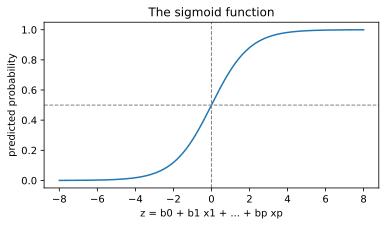

Chapter 9: Classification¶
Predicting a category: nearest neighbours, logistic regression and decision trees
Learning outcomes
After this chapter you should be able to:
- state the classification problem and explain what a decision boundary is;
- classify with k-nearest neighbours and explain why features must be scaled for it;
- explain logistic regression: the sigmoid, predicted probabilities, coefficients as changes in log-odds, and the threshold;
- grow and read a decision tree, and control its depth to avoid overfitting;
- describe a random forest as an ensemble of trees;
- compute accuracy, a confusion matrix, precision, recall and F1, and compare a classifier with a baseline;
- explain why accuracy misleads when the classes are imbalanced.
In classification the target is a category, called a class or label: spam or not spam, which of three species a flower belongs to, whether a customer will cancel a subscription. With two classes the problem is binary classification, usually with a "positive" class (the one we are looking for, such as spam or fraud) and a "negative" class; with more classes it is multiclass. Everything from Chapter 8 about features, training and test sets, baselines and overfitting carries over. What changes are the models, which must output a class (and ideally a probability), and the ways of measuring error.
import numpy as np
import pandas as pd
import matplotlib.pyplot as plt
from sklearn.model_selection import train_test_split
9.1 A dataset to classify¶
A subscription service wants to predict which customers will leave (churn) in the next month, so that it can offer them something to stay. We generate 1,000 customers with four features: months as a customer (tenure), monthly charge, number of support calls last quarter, and contract type. The rules that decide who churns (shorter tenure, higher charges, more support calls and monthly contracts all make churning more likely) are built in with some randomness, as in real life.
rng = np.random.default_rng(10)
n = 1000
tenure = rng.integers(1, 72, n)
charge = rng.uniform(200, 1200, n).round(0)
calls = rng.poisson(1.5, n)
contract = rng.choice(["monthly", "yearly"], n, p=[0.55, 0.45])
logit = (-2.5 - 0.05 * tenure + 0.0025 * charge + 0.45 * calls
+ np.where(contract == "monthly", 1.0, -0.8))
p_churn = 1 / (1 + np.exp(-logit))
churn = (rng.random(n) < p_churn).astype(int)
customers = pd.DataFrame({"tenure": tenure, "charge": charge, "calls": calls,
"contract": contract, "churn": churn})
print(customers.head())
print(customers["churn"].value_counts())
print(customers.groupby("contract")["churn"].mean().round(3))
tenure charge calls contract churn
0 56 576.0 3 yearly 0
1 68 1027.0 1 yearly 0
2 19 331.0 2 monthly 0
3 15 397.0 0 yearly 0
4 57 1031.0 2 monthly 1
churn
0 756
1 244
Name: count, dtype: int64
contract
monthly 0.363
yearly 0.100
Name: churn, dtype: float64
About one customer in four churns, and monthly-contract customers churn far more often than yearly ones. We turn the contract into a 0/1 feature, split the data, and keep the test set aside until the end. stratify=y makes the split keep the same proportion of churners in both parts.
customers["monthly"] = (customers["contract"] == "monthly").astype(int)
features = ["tenure", "charge", "calls", "monthly"]
X = customers[features]
y = customers["churn"]
X_train, X_test, y_train, y_test = train_test_split(X, y, test_size=0.25, random_state=1, stratify=y)
print(X_train.shape, X_test.shape, round(y_train.mean(), 3), round(y_test.mean(), 3))
(750, 4) (250, 4) 0.244 0.244
The baseline¶
The simplest classifier always predicts the most common class. Its accuracy, the majority-class baseline, is the number every real model must beat.
from sklearn.dummy import DummyClassifier
from sklearn.metrics import accuracy_score
dummy = DummyClassifier(strategy="most_frequent").fit(X_train, y_train)
print("baseline accuracy:", round(accuracy_score(y_test, dummy.predict(X_test)), 3))
baseline accuracy: 0.756
Predicting "nobody churns" is right about three times in four, yet it is useless: it never finds a single churner. Keep this in mind whenever an accuracy figure sounds impressive.
9.2 k-nearest neighbours¶
The k-nearest-neighbours (k-NN) classifier is the most intuitive of all: to classify a new example, find the \(k\) training examples closest to it and take a majority vote of their classes. There is no real training step; the model is the stored training data. "Closest" usually means Euclidean distance: for two examples with features \(x\) and \(z\),
Because the distance adds up differences across features, a feature measured in large numbers dominates. Here charge runs from 200 to 1,200 while calls runs from 0 to about 7, so without rescaling, k-NN would almost ignore the calls. Standardising the features first (Section 3.7) puts them on an equal footing. The scaler must learn its means and standard deviations from the training data only, which a pipeline guarantees.
from sklearn.neighbors import KNeighborsClassifier
from sklearn.preprocessing import StandardScaler
from sklearn.pipeline import make_pipeline
for k in [1, 5, 25]:
raw = KNeighborsClassifier(n_neighbors=k).fit(X_train, y_train)
scaled = make_pipeline(StandardScaler(), KNeighborsClassifier(n_neighbors=k)).fit(X_train, y_train)
print(f"k={k:>2}: accuracy unscaled {accuracy_score(y_test, raw.predict(X_test)):.3f}, "
f"scaled {accuracy_score(y_test, scaled.predict(X_test)):.3f}")
k= 1: accuracy unscaled 0.688, scaled 0.736
k= 5: accuracy unscaled 0.776, scaled 0.808
k=25: accuracy unscaled 0.752, scaled 0.836
Two lessons appear. Scaling helps, often a great deal. And \(k\) controls flexibility: \(k = 1\) follows every training point, noise included (low bias, high variance), while a larger \(k\) averages over more neighbours and gives a smoother, more stable rule. \(k\) is a hyperparameter, chosen on held-out data (Chapter 10), never on the test set.
Caution: fit preprocessing on the training data only
If the scaler is fitted on all the data before splitting, the test set's means and spreads leak into training, and the test score becomes slightly optimistic. Putting the scaler inside a pipeline, and fitting the pipeline on the training data, prevents this data leakage automatically. Chapter 10 returns to leakage, which is one of the most common ways evaluations go wrong.
9.3 Logistic regression¶
Despite its name, logistic regression is a classification method. It predicts the probability that an example belongs to the positive class. A linear combination of the features, \(z = b_0 + b_1 x_1 + \dots + b_p x_p\), can be any number, so it is passed through the sigmoid (logistic) function, which squeezes any number into the range 0 to 1:
z = np.linspace(-8, 8, 200)
fig, ax = plt.subplots(figsize=(6, 3))
ax.plot(z, 1 / (1 + np.exp(-z)), color="tab:blue")
ax.axhline(0.5, color="gray", linestyle="--", linewidth=1)
ax.axvline(0, color="gray", linestyle="--", linewidth=1)
ax.set_xlabel("z = b0 + b1 x1 + ... + bp xp")
ax.set_ylabel("predicted probability")
ax.set_title("The sigmoid function")
fig.savefig("sigmoid.svg")

The model predicts the positive class when \(\hat{p}\) is at least a threshold, by default 0.5, which corresponds to \(z \ge 0\). The coefficients are fitted by maximising the likelihood of the training labels (equivalently, minimising a loss called log-loss) rather than by least squares.
from sklearn.linear_model import LogisticRegression
logreg = make_pipeline(StandardScaler(), LogisticRegression())
logreg.fit(X_train, y_train)
print("accuracy:", round(accuracy_score(y_test, logreg.predict(X_test)), 3))
coefs = pd.Series(logreg[-1].coef_[0], index=features)
print(coefs.round(3))
print(logreg.predict_proba(X_test.iloc[:3]).round(3))
accuracy: 0.856
tenure -1.134
charge 0.884
calls 0.490
monthly 1.016
dtype: float64
[[0.915 0.085]
[0.763 0.237]
[0.809 0.191]]
predict_proba returns, for each example, the probability of each class (columns in the order of classes_, here 0 then 1). predict applies the 0.5 threshold to the second column.
Reading the coefficients¶
The odds of an event with probability \(p\) are \(p/(1-p)\): a probability of 0.8 is odds of 4 to 1. Logistic regression is linear in the log-odds:
So each coefficient is the change in log-odds for a one-unit increase in its feature, other features fixed, and \(e^{b_j}\) is the factor by which the odds are multiplied. Because the features were standardised, "one unit" here means one standard deviation, which makes the sizes comparable: tenure has the largest effect (negative: longer-standing customers are less likely to leave), followed by the monthly contract and the charge, and then support calls (all positive).
print(np.exp(coefs).round(2))
tenure 0.32
charge 2.42
calls 1.63
monthly 2.76
dtype: float64
For example, one standard deviation more tenure (about 20 months) multiplies the odds of churning by about 0.3, cutting them by about two-thirds.
Note: regularisation is on by default
scikit-learn's LogisticRegression applies a ridge-type penalty by default, with strength set by the parameter C (the inverse of the penalty: smaller C means stronger regularisation). With plenty of data and few features it makes little difference, but it is one more reason to standardise the features first.
9.4 Decision trees¶
A decision tree classifies by asking a sequence of yes/no questions about the features, such as "is tenure at most 12 months?", each answer leading to another question or to a final class. It is grown from the training data top-down: at each step, the algorithm searches all features and thresholds for the split that makes the two resulting groups as pure as possible (each dominated by one class), and repeats within each group.
Purity is measured by the Gini impurity. For a group in which a fraction \(p_c\) of the examples belongs to class \(c\),
A pure group has \(G = 0\); a 50/50 mix of two classes has \(G = 0.5\), the maximum for two classes. The chosen split is the one that most reduces the size-weighted impurity of the two groups.
Example 9.1: Choosing between two splits
A group of 10 customers contains 4 churners, so \(G = 1 - (0.4^2 + 0.6^2) = 0.48\). Split A divides them into a group of 5 with 4 churners and a group of 5 with none. Split B makes a group of 6 with 3 churners and a group of 4 with 1.
- Split A: \(G_1 = 1 - (0.8^2 + 0.2^2) = 0.32\), \(G_2 = 0\); weighted \(= 0.5 \times 0.32 + 0.5 \times 0 = 0.16\).
- Split B: \(G_1 = 1 - (0.5^2 + 0.5^2) = 0.5\), \(G_2 = 1 - (0.25^2 + 0.75^2) = 0.375\); weighted \(= 0.6 \times 0.5 + 0.4 \times 0.375 = 0.45\).
Split A reduces the impurity from 0.48 to 0.16, far more than B, so the tree chooses A.
Trees need no scaling (a threshold on charge works the same in any units) and handle interactions naturally. Left to grow until every leaf is pure, though, a tree memorises the training data. Limiting its depth is the simplest control:
from sklearn.tree import DecisionTreeClassifier, export_text
for depth in [1, 3, 5, None]:
tree = DecisionTreeClassifier(max_depth=depth, random_state=0).fit(X_train, y_train)
print(f"max_depth={str(depth):>4}: train accuracy {accuracy_score(y_train, tree.predict(X_train)):.3f}, "
f"test accuracy {accuracy_score(y_test, tree.predict(X_test)):.3f}, leaves {tree.get_n_leaves()}")
max_depth= 1: train accuracy 0.756, test accuracy 0.756, leaves 2
max_depth= 3: train accuracy 0.824, test accuracy 0.812, leaves 8
max_depth= 5: train accuracy 0.847, test accuracy 0.816, leaves 26
max_depth=None: train accuracy 1.000, test accuracy 0.748, leaves 162
The unlimited tree is perfect on the training data and clearly worse on the test data: overfitting again, as with the degree-15 polynomial. A shallow tree has the great advantage that a person can read it:
small_tree = DecisionTreeClassifier(max_depth=3, random_state=0).fit(X_train, y_train)
print(export_text(small_tree, feature_names=features, show_weights=True))
|--- monthly <= 0.50
| |--- charge <= 1005.50
| | |--- tenure <= 31.50
| | | |--- weights: [100.00, 12.00] class: 0
| | |--- tenure > 31.50
| | | |--- weights: [153.00, 3.00] class: 0
| |--- charge > 1005.50
| | |--- tenure <= 12.50
| | | |--- weights: [5.00, 9.00] class: 1
| | |--- tenure > 12.50
| | | |--- weights: [48.00, 12.00] class: 0
|--- monthly > 0.50
| |--- tenure <= 42.50
| | |--- charge <= 665.50
| | | |--- weights: [83.00, 38.00] class: 0
| | |--- charge > 665.50
| | | |--- weights: [42.00, 87.00] class: 1
| |--- tenure > 42.50
| | |--- calls <= 5.50
| | | |--- weights: [136.00, 20.00] class: 0
| | |--- calls > 5.50
| | | |--- weights: [0.00, 2.00] class: 1
Each line is a question. Each leaf shows how many training customers reached it in each class (stayed, churned) and the class it predicts, the majority there. The tree first splits on contract type. The largest group of churners is monthly customers with tenure up to about 42 months and a charge above about 665: 87 of the 129 customers in that leaf churned. Among yearly customers, only those paying a high charge who joined within the last year are predicted to churn. This readability is why trees are popular where decisions must be explained.
Random forests¶
A single deep tree is unstable: a slightly different training set can give a very different tree. A random forest grows many trees, each on a random resample of the training data (a bootstrap sample, Section 7.5) and considering a random subset of features at each split, and lets them vote. Averaging many unstable but different trees cancels much of their variance. Forests are among the most reliable general-purpose classifiers, at the cost of the single tree's readability.
from sklearn.ensemble import RandomForestClassifier
forest = RandomForestClassifier(n_estimators=300, min_samples_leaf=5, random_state=0)
forest.fit(X_train, y_train)
print("forest test accuracy:", round(accuracy_score(y_test, forest.predict(X_test)), 3))
print(pd.Series(forest.feature_importances_, index=features).round(3).sort_values(ascending=False))
forest test accuracy: 0.852
tenure 0.399
charge 0.335
monthly 0.174
calls 0.091
dtype: float64
feature_importances_ measures how much each feature reduced impurity across all the trees. It is a rough guide to what the model relies on, not a causal statement, and it tends to favour features with many distinct values.
9.5 Decision boundaries¶
A classifier divides the space of features into regions, one per predicted class; the borders between them are the decision boundaries. With two features they can be drawn. Using only tenure and charge, here are the boundaries of the three kinds of model:
two = ["tenure", "charge"]
models = {
"k-NN (k=15)": make_pipeline(StandardScaler(), KNeighborsClassifier(15)),
"logistic regression": make_pipeline(StandardScaler(), LogisticRegression()),
"decision tree (depth 4)": DecisionTreeClassifier(max_depth=4, random_state=0),
}
tt, cc = np.meshgrid(np.linspace(1, 72, 200), np.linspace(200, 1200, 200))
grid = pd.DataFrame({"tenure": tt.ravel(), "charge": cc.ravel()})
fig, axes = plt.subplots(1, 3, figsize=(12, 3.5), sharey=True)
sample = X_train.assign(churn=y_train).sample(250, random_state=0)
for ax, (name, m) in zip(axes, models.items()):
m.fit(X_train[two], y_train)
zz = m.predict(grid).reshape(tt.shape)
ax.contourf(tt, cc, zz, levels=[-0.5, 0.5, 1.5], colors=["#dce9f5", "#f7d9c4"])
ax.scatter(sample["tenure"], sample["charge"], c=sample["churn"], cmap="coolwarm", s=16, edgecolor="none")
ax.set_title(name)
ax.set_xlabel("tenure (months)")
axes[0].set_ylabel("monthly charge")
fig.tight_layout()
fig.savefig("decision-boundaries.svg")

Logistic regression always draws a straight boundary (a linear classifier); k-NN draws a flexible, irregular one that follows local clusters of points; a tree draws axis-parallel steps. None separates the classes perfectly, because churn depends on features not shown and on chance. The best model is the one whose kind of boundary suits the data, and that is decided by evaluation, not by looks.
9.6 Measuring a classifier¶
The confusion matrix¶
Accuracy, the fraction of correct predictions, hides which mistakes a model makes. A confusion matrix counts the four combinations of true and predicted class for a binary problem:
| Predicted negative | Predicted positive | |
|---|---|---|
| Actually negative | true negatives (TN) | false positives (FP) |
| Actually positive | false negatives (FN) | true positives (TP) |
Table 9.1. The layout of a confusion matrix (scikit-learn's order: rows are actual classes, columns predicted, negative first).
From it come the measures that matter in most applications:
- Precision \(= \dfrac{TP}{TP + FP}\): of the examples flagged positive, the fraction that really are. (How much can I trust a positive prediction?)
- Recall (sensitivity) \(= \dfrac{TP}{TP + FN}\): of the real positives, the fraction found. (How many churners do I catch?)
- F1 score \(= \dfrac{2 \cdot \text{precision} \cdot \text{recall}}{\text{precision} + \text{recall}}\), their harmonic mean, which is high only when both are.
from sklearn.metrics import confusion_matrix, precision_score, recall_score, f1_score, classification_report
pred = logreg.predict(X_test)
print(confusion_matrix(y_test, pred))
print(f"precision {precision_score(y_test, pred):.3f}, recall {recall_score(y_test, pred):.3f}, "
f"F1 {f1_score(y_test, pred):.3f}")
print(classification_report(y_test, pred, digits=3))
[[180 9]
[ 27 34]]
precision 0.791, recall 0.557, F1 0.654
precision recall f1-score support
0 0.870 0.952 0.909 189
1 0.791 0.557 0.654 61
accuracy 0.856 250
macro avg 0.830 0.755 0.781 250
weighted avg 0.850 0.856 0.847 250
classification_report prints precision, recall and F1 for each class, with the number of true examples of each (support). For the churn class, the model catches only part of the churners (recall) while most of the customers it flags really do churn (precision).
Moving the threshold¶
The 0.5 threshold is a default, not a law. If missing a churner is costly and an offer is cheap, the company should flag customers at a lower probability, accepting more false alarms to catch more churners. Lowering the threshold raises recall and lowers precision:
proba = logreg.predict_proba(X_test)[:, 1]
for t in [0.5, 0.35, 0.2]:
p = (proba >= t).astype(int)
print(f"threshold {t}: precision {precision_score(y_test, p):.3f}, recall {recall_score(y_test, p):.3f}, "
f"flagged {p.sum()} of {len(p)}")
threshold 0.5: precision 0.791, recall 0.557, flagged 43 of 250
threshold 0.35: precision 0.656, recall 0.656, flagged 61 of 250
threshold 0.2: precision 0.521, recall 0.803, flagged 94 of 250
Choosing the threshold is a business decision about the relative costs of the two kinds of error, informed by the model. Chapter 10 shows how to look at all thresholds at once with the ROC curve.
Caution: accuracy and imbalanced classes
When one class is rare, accuracy is dominated by the common class. A fraud detector for a problem where 1 transaction in 1,000 is fraudulent can reach 99.9% accuracy by never flagging anything. For imbalanced problems report the confusion matrix, precision and recall (or F1), and always the baseline.
9.7 Summary¶
Summary
- Classification predicts a class. A classifier's decision boundaries divide feature space into class regions.
- Compare every classifier with the majority-class baseline (
DummyClassifier). - k-NN votes among the \(k\) nearest training examples; scale features first; small \(k\) overfits, large \(k\) smooths.
- Logistic regression passes a linear score through the sigmoid to get a probability; coefficients are changes in log-odds and \(e^{b}\) multiplies the odds; predictions use a threshold, 0.5 by default.
- Decision trees split greedily to reduce Gini impurity; they need no scaling and can be read, but overfit unless their depth is limited. Random forests average many randomised trees.
- Fit all preprocessing on training data only, ideally inside a pipeline, to avoid leakage.
- The confusion matrix gives TP, FP, FN, TN; precision \(= TP/(TP+FP)\), recall \(= TP/(TP+FN)\), F1 their harmonic mean. Moving the threshold trades precision against recall.
- Accuracy misleads for imbalanced classes.
9.8 Exercises¶
Exercise 1
A model's confusion matrix on 200 test cases is: TN = 120, FP = 20, FN = 15, TP = 45. Compute accuracy, precision, recall and F1.
Answer
Accuracy \(= (120 + 45)/200 = 0.825\). Precision \(= 45/(45 + 20) = 0.692\). Recall \(= 45/(45 + 15) = 0.75\). F1 \(= 2 \times 0.692 \times 0.75 / (0.692 + 0.75) = 0.72\).
tp, fp, fn, tn = 45, 20, 15, 120
prec, rec = tp / (tp + fp), tp / (tp + fn)
print(round((tp + tn) / 200, 3), round(prec, 3), round(rec, 3), round(2 * prec * rec / (prec + rec), 3))
0.825 0.692 0.75 0.72
Exercise 2
Compute the Gini impurity of a group with 3 examples of class A, 3 of class B and 4 of class C.
Answer
\(G = 1 - (0.3^2 + 0.3^2 + 0.4^2) = 1 - (0.09 + 0.09 + 0.16) = 0.66\).
Exercise 3
A logistic regression has the equation \(\log(\text{odds}) = -2 + 0.8x\). What is the predicted probability at \(x = 0\) and at \(x = 5\)? At what \(x\) is the probability exactly 0.5?
Answer
At \(x = 0\), \(z = -2\) and \(\hat{p} = 1/(1 + e^{2}) \approx 0.119\). At \(x = 5\), \(z = 2\) and \(\hat{p} = 1/(1 + e^{-2}) \approx 0.881\). The probability is 0.5 where \(z = 0\), that is \(x = 2.5\).
sig = lambda z: 1 / (1 + np.exp(-z))
print(round(sig(-2 + 0.8 * 0), 3), round(sig(-2 + 0.8 * 5), 3))
0.119 0.881
Exercise 4
Why does k-NN need standardised features while a decision tree does not?
Answer
k-NN uses distances that add up differences across features, so a feature with a large numerical range dominates the distance and the others are effectively ignored. A tree compares one feature at a time with a threshold; rescaling a feature moves the threshold but does not change which examples go left or right, so the tree is unaffected.
Exercise 5
Train a decision tree of depth 3 on the churn training data and report its precision and recall for the churn class on the test set. How do they compare with logistic regression's?
Answer
t3 = DecisionTreeClassifier(max_depth=3, random_state=0).fit(X_train, y_train)
p3 = t3.predict(X_test)
print(f"tree: precision {precision_score(y_test, p3):.3f}, recall {recall_score(y_test, p3):.3f}")
print(f"logistic: precision {precision_score(y_test, pred):.3f}, recall {recall_score(y_test, pred):.3f}")
tree: precision 0.646, recall 0.508
logistic: precision 0.791, recall 0.557
Compare the two lines: the models make different trade-offs between flagging too many customers and missing churners. Which is better depends on the costs of the two errors, and a single test split is a noisy basis for the choice; Chapter 10 uses cross-validation to compare them more reliably.
Exercise 6
A hospital wants a model to flag patients who might have a serious but treatable condition, for a follow-up test. Should it favour precision or recall, and how would it adjust the threshold?
Answer
Recall: missing a patient who has the condition (a false negative) is far more costly than an unnecessary follow-up test (a false positive). The hospital should lower the threshold so that more patients are flagged, accepting lower precision, and choose the threshold by the recall it needs, checked on validation data.
9.9 Quiz¶
Check your understanding of Chapter 9
Exercise 1
What does the sigmoid function output?
- a class label
- a number between 0 and 1
- a distance
- a Gini impurity
Answer
a number between 0 and 1
Exercise 2
Recall is
- TP / (TP + FP)
- TP / (TP + FN)
- (TP + TN) / total
- TN / (TN + FP)
Answer
TP / (TP + FN)
Exercise 3
Lowering the classification threshold usually
- raises precision and recall
- raises recall and lowers precision
- lowers recall and raises precision
- changes nothing
Answer
raises recall and lowers precision
Exercise 4
Which classifier needs feature scaling the most?
- decision tree
- random forest
- k-nearest neighbours
- majority-class baseline
Answer
k-nearest neighbours
Exercise 5
What is the Gini impurity of a group that contains only one class?
Answer
0
Exercise 6
A decision tree with no depth limit is perfect on the training data and worse on test data. This is
- underfitting
- overfitting
- data leakage
- a baseline
Answer
overfitting
Exercise 7
In logistic regression, a coefficient of 0 for a feature means
- the feature has no effect on the predicted odds
- the feature always predicts class 0
- the model failed
- the odds are zero
Answer
the feature has no effect on the predicted odds